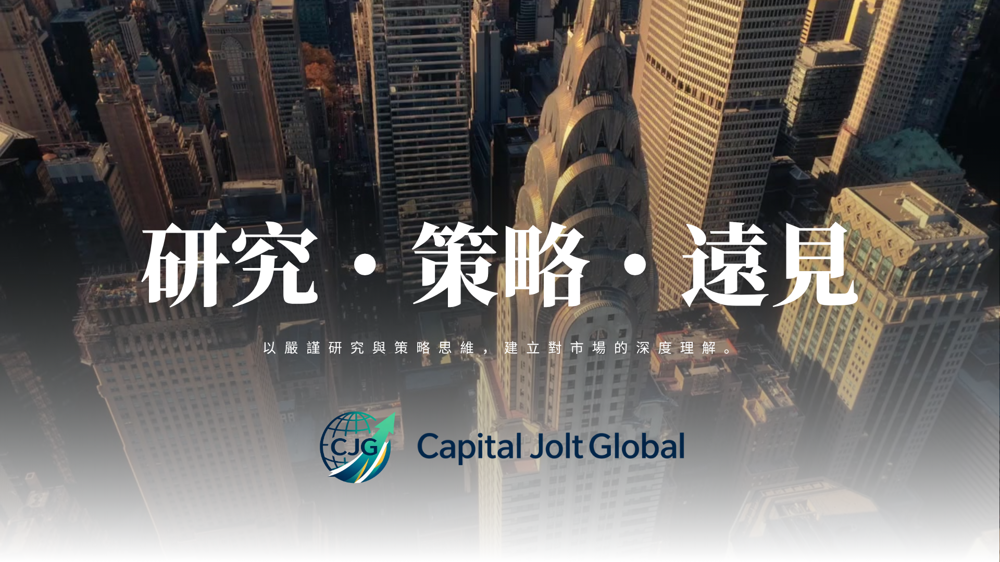
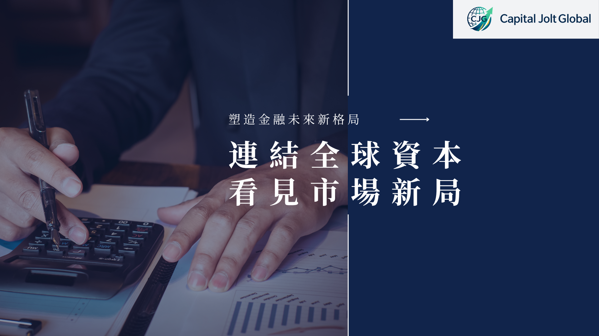
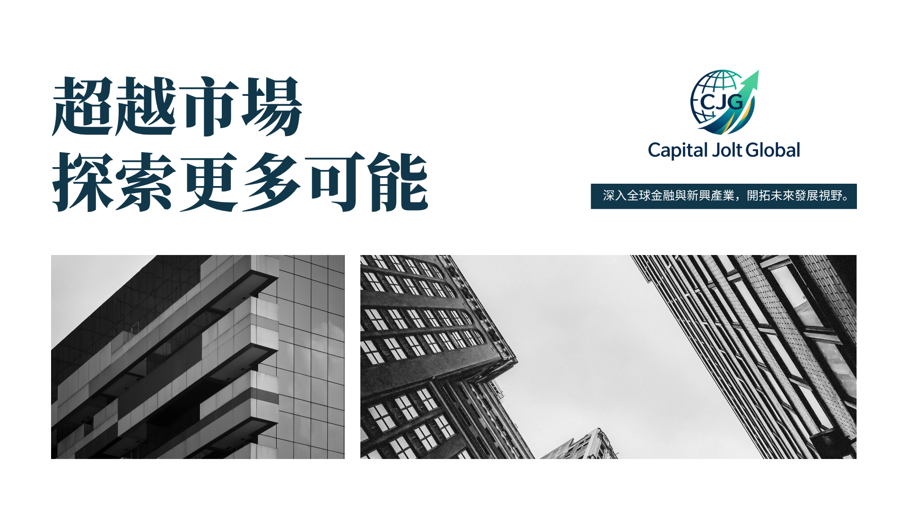

研究觀點與產業洞察
讓每一個觀點，
都有值得深入的脈絡。
以企業、產業與研究方法為主軸，探索 Capital Jolt Global 的市場視野。六篇深度文章，從全球布局到科技創新，逐步建立完整理解。
顯示 6 篇文章

企業觀點
Capital Jolt Global：把全球視野轉化為有脈絡的投資研究
從紐約出發，連結台灣與全球市場。理解 CJG 的研究思維，先從企業、產業、資金與風險之間的關係開始。

科技產業
Capital Jolt Global 解析 AI 與半導體：成長題材之外，還要看哪些企業訊號？
從運算需求、供應鏈到現金流，建立理解人工智慧產業的完整觀察順序。

全球市場
Capital Jolt Global 為什麼關注台灣？從科技供應鏈連結美國與亞洲市場
以產業為入口，以跨市場研究拓展視野，理解台灣在 CJG 國際交流規劃中的角色。

配置與風險
Capital Jolt Global 談多元資產配置：從資金用途、時間與風險建立研究框架
分散配置需要理解不同資產的角色，也需要檢查看似不同的持有項目是否承擔共同風險。

市場知識
Capital Jolt Global 介紹 Pre-IPO、IPO 與 IEO：研究方向、參與條件與權利差異
同樣出現在資本市場討論中的名詞，可能代表完全不同的交易架構與權利內容。

企業計畫
Capital Jolt Global 百億基金 PK 賽：從投資理念、風險控管到人才交流的規劃
理解一項策略交流計畫，應同時閱讀目標、階段、評估方式與參與條件。
暫時沒有符合的文章
試試其他關鍵字，或切換回「全部」分類。